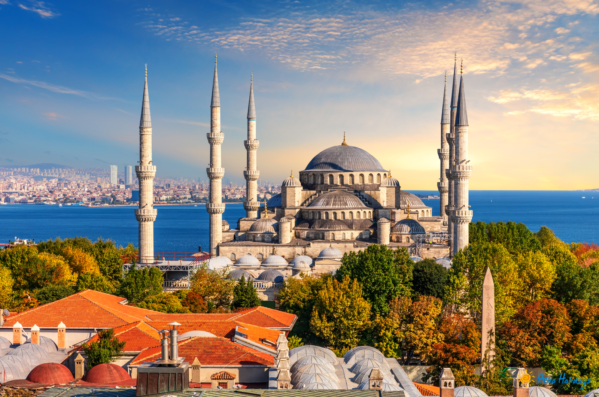
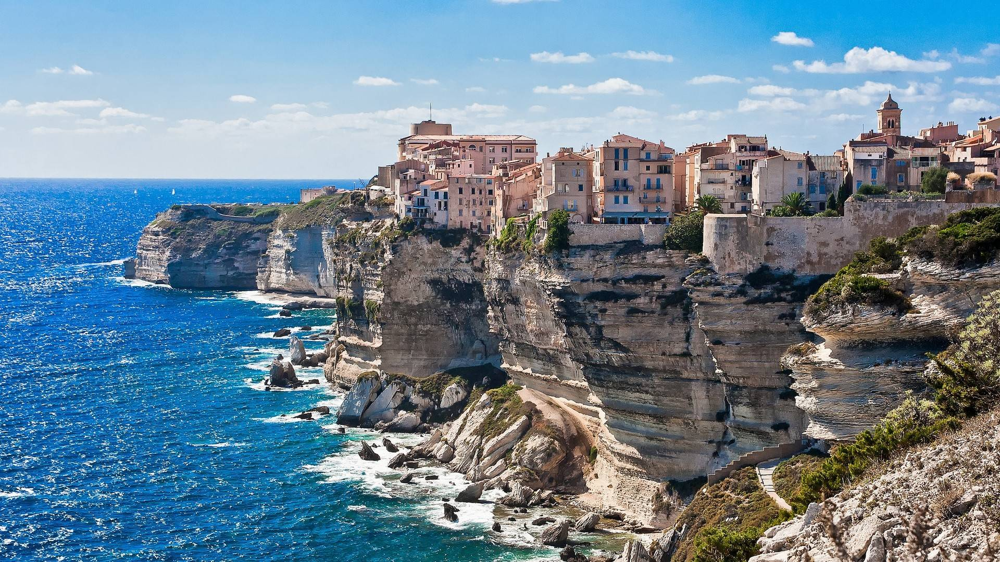

MEDITERANSKA PUTOVANJA
Daleka putovanja predstavljaju pravo putovanje iz snova, namijenjeno onima koji žele doživjeti svijet u njegovoj punoj raznolikosti. Atlas Tour vas vodi na destinacije koje oduzimaju dah – od egzotičnih azijskih zemalja, mistične Afrike i živopisne Latinske Amerike do modernih metropola Sjeverne Amerike. Ova putovanja nude susret s drugačijim kulturama, tradicijama i načinima života, ali i priliku za osobni rast i nezaboravne doživljaje. Uz stručno planirane programe, iskusne vodiče i posebnu pažnju posvećenu sigurnosti i udobnosti, daleka putovanja s Atlas Tourom pretvaraju maštu u stvarnost i ostavljaju uspomene koje traju cijeli život.
Grčka
Grčka je zemlja bogate povijesti, mitologije i bezvremenske ljepote. Antički spomenici, bijela otočna naselja i tirkizno more stvaraju idealnu kulisu za nezaboravno putovanje. Atlas Tour nudi raznolike programe koji uključuju kulturna razgledavanja, opuštanje na plažama i uživanje u mediteranskoj kuhinji. Grčka je savršen izbor za putnike koji žele spoj povijesti, prirode i opuštenog načina života.
8 dana zrakoplovom
1.350 EUR

Istanbul
Istanbul je grad na raskrižju Europe i Azije, gdje se susreću različite kulture, religije i povijesna razdoblja. Impresivne džamije, palače i živopisni bazari pričaju priču o bogatoj prošlosti ovog fascinantnog grada. Atlas Tour vodi vas kroz znamenitosti poput Aje Sofije, Plave džamije i Bosfora, uz doživljaj autentične turske kuhinje i gostoljubivosti. Istanbul je destinacija koja očarava svojom energijom, kontrastima i neponovljivom atmosferom.
5 dana zrakoplovom
1.000 EUR

Korzika
Korzika je otok divlje ljepote, netaknute prirode i snažnog identiteta. Dramatični planinski krajolici, slikovite plaže i šarmantna mjesta uz obalu stvaraju savršen spoj mora i prirode. Putovanje na Korziku s Atlas Tourom donosi jedinstveno iskustvo istraživanja autentičnog mediteranskog otoka, bogate povijesti i lokalne tradicije. Korzika je idealna za putnike koji traže mir, prirodne ljepote i drugačiji doživljaj Mediterana.
8 dana busom
1.140 EUR
Malta
Malta je otočna destinacija bogate povijesti, kristalno čistog mora i jedinstvenog mediteranskog šarma. Spoj drevnih hramova, srednjovjekovnih gradova i sunčanih obala čini Maltu idealnim odredištem za ljubitelje kulture i odmora. Atlas Tour nudi putovanja koja omogućuju istraživanje povijesnih znamenitosti, uživanje u lokalnoj gastronomiji i opuštanje uz more. Malta osvaja svojom autentičnošću i toplinom, pružajući doživljaj koji se dugo pamti.
5 dana zrakoplovom
900 EUR